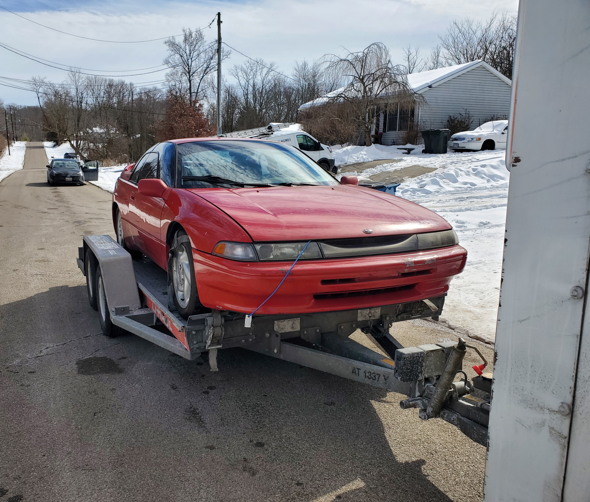
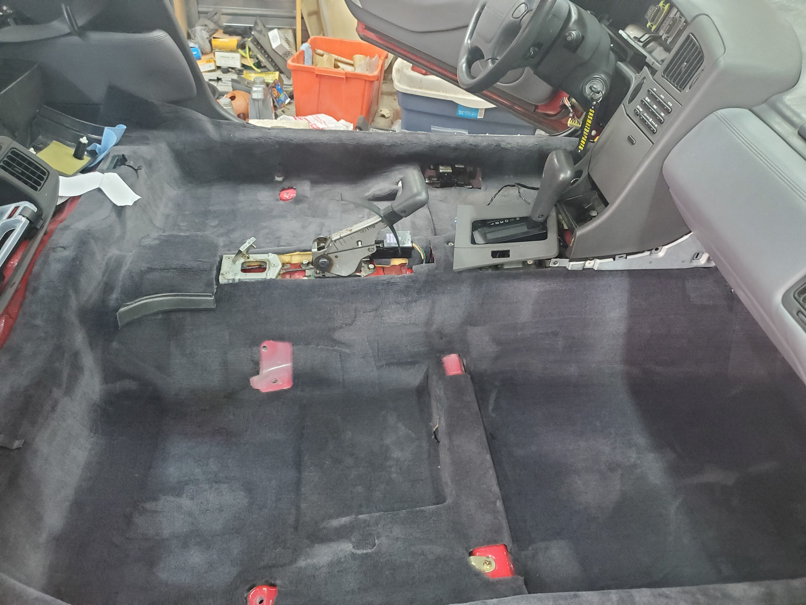
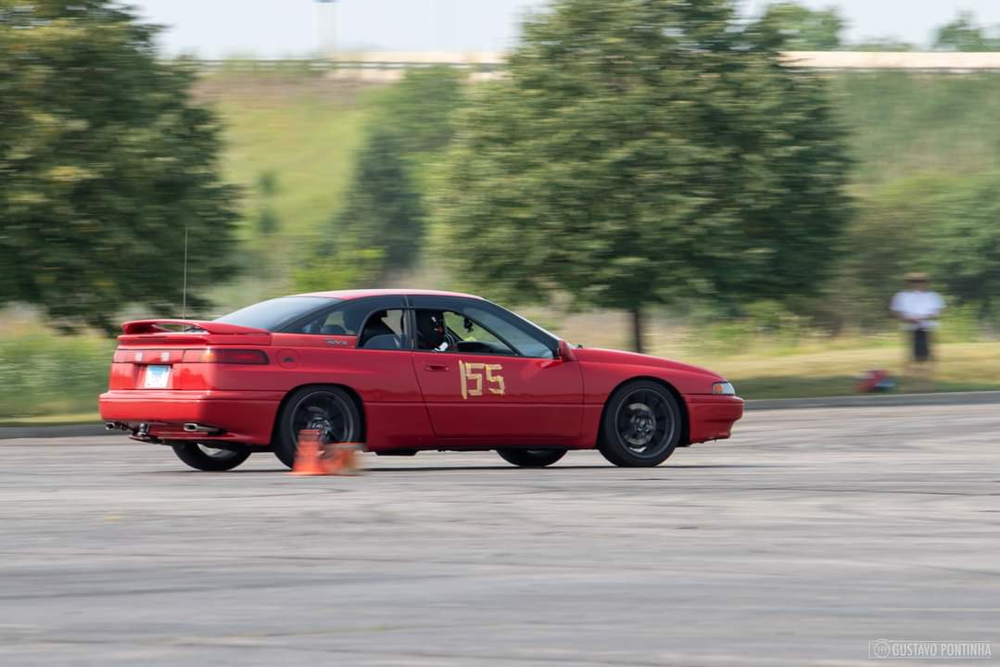
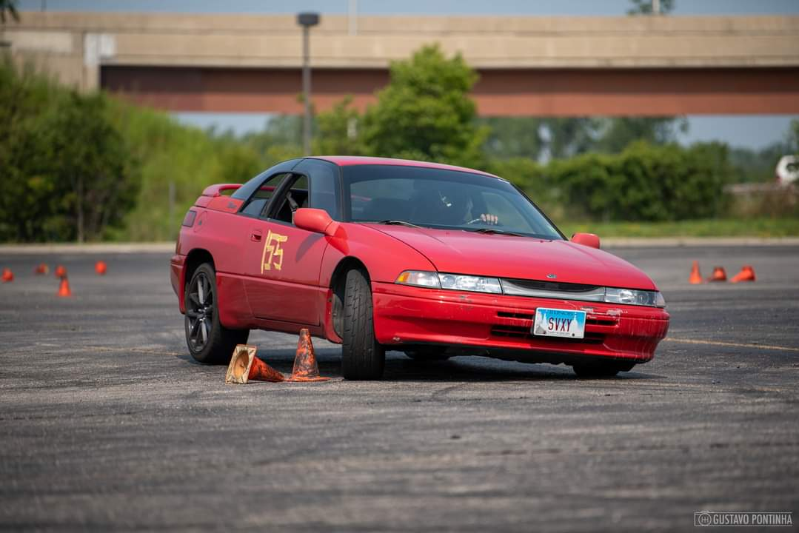

Some Background
Now that I had transferred to UIUC, I needed a car that allowed me to travel around campus as well as visit home during weekends. I did not want to take the Miata because I wanted to preserve the car's frame and chassis from rusting. I came across a video showcasing underrated cars sometime in late 2020 and saw a Subaru SVX on the list. I instantly thought to myself that this car would be an excellent car to use during winter. It features an all wheel drive drivetrain, paired to a four speed automatic and a H6 engine. Additionally, this car was designed by Giorgetto Giugiaro (same designer for the DMC DeLorean). Alongside being an odd and quirky car from the late '90s, they are extremely rare to come by now. For example, there are only 38 still registered in all of the UK. (The number in the United States is unknown since there is no central DMV like there is in the UK.)
While searching on Facebook for an SVX, I came across a passionate owner who had recently injured his back and could drive the car anymore. It had been sitting in his driveway for over a year and it needed quite a bit of work to ensure it was still driveable. I decided to drive to Cincinnati, Ohio and tow it back via U-Hual.
 How the car looked the day I bought it. Unfortunately it was not safe to drive back and was loaded onto the U-Hual for a 6 hour drive home!
The Beginning of A New Life
Now that it was back home, it was time to tackle the following issues: engine oil leak, new fluids, and cooling system leaks. I was very thankful that I had experienced working on a car prior to tackling this. I immediately replaced all of the old fluids and repaired the engine oil leak with a new set of valve cover gaskets. These were vital to replace before starting and driving the car and thankfully it was an easy repair. Once it was safe to drive around the block the cooling system had an urgent leak. This leak was in the worst possible location: under the dashboard. To tackle this, I had to remove 26 bolts, 12 clips, 3 screws and 2 nuts. Since I now had the interior nearly stripped down to its body, I used this opportunity to clean up the car too.


Although this cumbersome task was finished, my cooling system was extremely rusty and needed to be flushed and a couple of hoses needed to be replaced. (One hose looked like it had a tennis ball stuck inside of it!) After flushing 8 gallons of distilled water, The cooling system was still dirty, but much better. There is nothing more I could do since every flush after that was a waste. At least my end goal of proper cooling was achieved.
Now the car drives! It is currently my daily driver and has actually tackled an autocross event semi-successfully too! There are plans similar to what I have done with the Miata but those are being held off for after I complete my degree.
 A picture from its second run of the day. The split windows never get old! Yikes! So much body roll! This is on the list of things to improve.